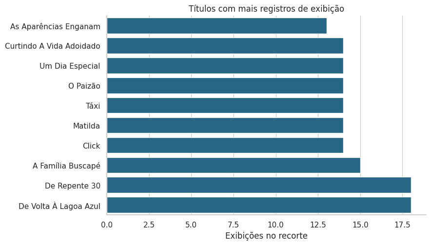
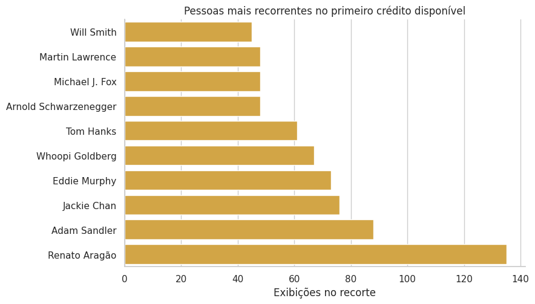
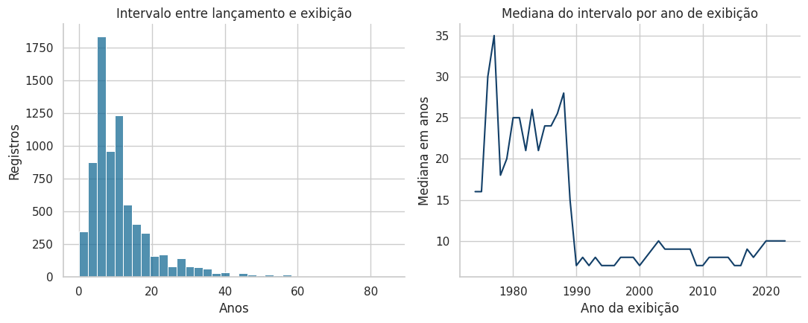

Recorrência, elenco, idade dos filmes e avaliações
Exploração da base enriquecida de filmes exibidos na Sessão da Tarde.
Esta etapa investiga os padrões propostos no início do projeto. O recorte parte da base enriquecida e conserva apenas registros com título, data de lançamento e avaliação válidos; também exclui casos em que o lançamento aparece depois da exibição.
Os números abaixo descrevem os arquivos versionados neste repositório. A fonte de exibições é comunitária, e as avaliações do TMDB são um retrato do momento em que os dados foram coletados.
Preparação do recorte
Ver código
import astfrom collections import Counterimport matplotlib.pyplot as pltimport pandas as pdimport seaborn as snsfrom sklearn.cluster import KMeansfrom sklearn.metrics import silhouette_scorefrom sklearn.preprocessing import StandardScalersns.set_theme(style="whitegrid", context="notebook", palette="colorblind")plt.rcParams["figure.figsize"] = (9, 5.2)
O recorte evita tratar ausências e combinações cronologicamente impossíveis como observações válidas. Ele é usado nas seções seguintes, exceto quando a pergunta requer elenco, que tem sua própria filtragem.
ax = sns.barplot( data=top_titles.sort_values("exibições"), x="exibições", y="filme", color="#176b95",)ax.set( title="Títulos com mais registros de exibição", xlabel="Exibições no recorte", ylabel=None,)sns.despine()plt.tight_layout()plt.show()

“De Repente 30” e “De Volta à Lagoa Azul” ocupam o topo deste recorte, com 18 registros cada. A contagem mede ocorrências na base depois das validações descritas acima.
Quem aparece nos elencos?
Ver código
cast_df = df.dropna(subset=["cast"]).copy()cast_df["cast"] = cast_df["cast"].apply(ast.literal_eval)all_cast = Counter(name for cast in cast_df["cast"] for name in cast)first_credit = Counter(cast[0] for cast in cast_df["cast"] if cast)actor_summary = pd.DataFrame( {"todos os créditos disponíveis": dict(all_cast.most_common(10)),"primeiro crédito": dict(first_credit.most_common(10)), }).fillna("—")actor_summary
todos os créditos disponíveis
primeiro crédito
Renato Aragão
135.0
135.0
Eddie Murphy
122.0
73.0
Dedé Santana
105.0
—
Adam Sandler
88.0
88.0
Whoopi Goldberg
82.0
67.0
Jackie Chan
78.0
76.0
Mussum
75.0
—
Anne Hathaway
74.0
—
Steve Guttenberg
72.0
—
Tom Hanks
66.0
61.0
Martin Lawrence
—
48.0
Arnold Schwarzenegger
—
48.0
Michael J. Fox
—
48.0
Will Smith
—
45.0
Ver código
top_first_credit = pd.DataFrame( first_credit.most_common(10), columns=["pessoa", "exibições"],)ax = sns.barplot( data=top_first_credit.sort_values("exibições"), x="exibições", y="pessoa", color="#e9ad2f",)ax.set( title="Pessoas mais recorrentes no primeiro crédito disponível", xlabel="Exibições no recorte", ylabel=None,)sns.despine()plt.tight_layout()plt.show()

Renato Aragão aparece com maior frequência tanto na soma dos créditos armazenados quanto na primeira posição dessas listas. A leitura deve considerar que o CSV guarda apenas o elenco disponível no enriquecimento, e não necessariamente os créditos completos de cada filme.
fig, axes = plt.subplots(1, 2, figsize=(11, 4.5))sns.histplot(data=df, x="diff", bins=35, color="#176b95", ax=axes[0])axes[0].set( title="Intervalo entre lançamento e exibição", xlabel="Anos", ylabel="Registros",)yearly_gap = df.groupby("year", as_index=False)["diff"].median()sns.lineplot(data=yearly_gap, x="year", y="diff", color="#123f68", ax=axes[1])axes[1].set( title="Mediana do intervalo por ano de exibição", xlabel="Ano da exibição", ylabel="Mediana em anos",)sns.despine()plt.tight_layout()plt.show()

A mediana do recorte é de 9 anos entre lançamento e exibição. A distribuição é assimétrica e chega a intervalos muito maiores; por isso a mediana anual é mais legível do que uma média isolada.
fig, axes = plt.subplots(1, 2, figsize=(12, 4.8))sns.histplot(data=df, x="vote_average", bins=30, color="#176b95", ax=axes[0])axes[0].set( title="Distribuição das avaliações", xlabel="Avaliação média no TMDB", ylabel="Registros",)sns.boxplot( data=df, x="gap_group", y="vote_average", color="#dceef6", showfliers=False, ax=axes[1],)axes[1].set( title="Avaliação por intervalo até a exibição", xlabel="Anos entre lançamento e exibição", ylabel="Avaliação média no TMDB",)sns.despine()plt.tight_layout()plt.show()
As faixas permitem comparar distribuições sem sugerir causalidade. A avaliação vem de uma fonte externa e não mede a recepção específica da exibição na televisão; a correlação apenas resume associação linear dentro deste recorte.
Uma exploração de agrupamentos
O notebook original testava k-means com idade e avaliação. Aqui as variáveis são padronizadas antes do ajuste, para que a escala em anos não domine a escala de avaliação. O exercício é descritivo: não prevê futuras exibições e não define categorias naturais de filmes.